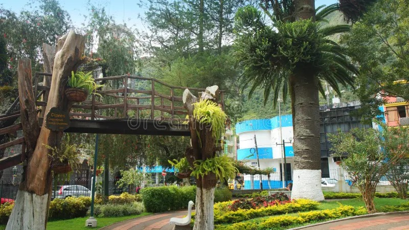
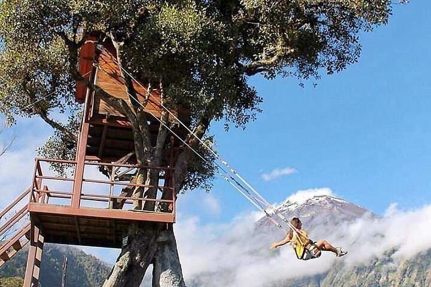
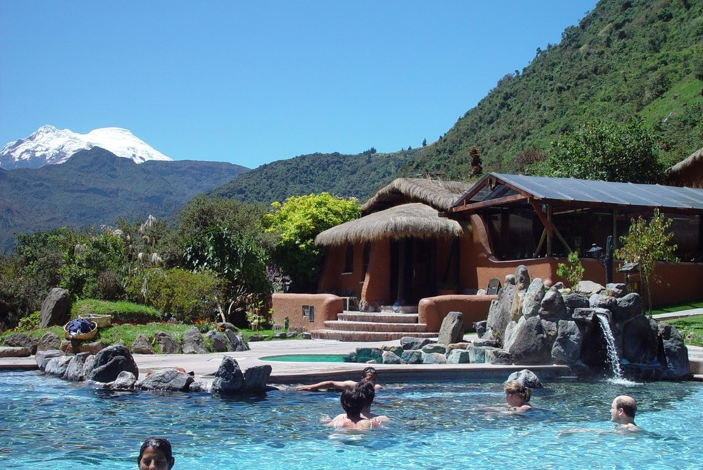

A continuación algunas imágenes representativas de la ciudad de Baños:
| Basílica Nuestra Señora del Rosario de Agua Santa | Parque Central Palomino Flores |
|---|---|
 |  |
| La Casa del Árbol y el "Columpio del Fin del Mundo" | Balnearios y Piscinas de Agua Termal |
|  |  |